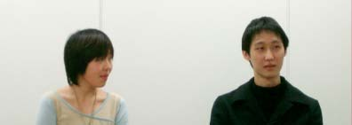
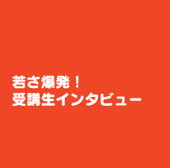
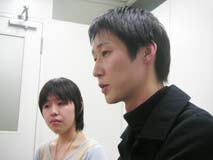
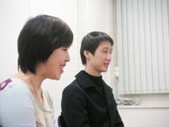
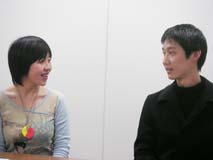
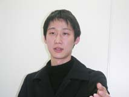
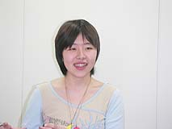
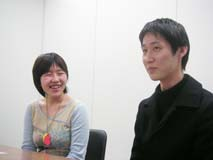
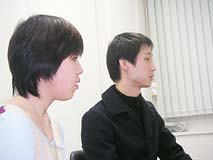

| |
|  |
 |
 |
| セミナー受講生30名弱の学生さんたちのなかから、今回は２人にご登場願いました。このセミナーに参加してなにを学び、なにを得たのでしょう。次週に発表会を控えた追い込み作業で忙しいなか、特別に時間を取ってもらいました。追い込み作業に後ろ髪ひかれつつ、緊張した面持ちで部屋へやって来た２人でしたが、セミナーについて語る姿からはとても大きな熱意が伝わってきました。 |
|
N.O.M なぜこのセミナーを受講しようと思ったんですか？
柿沼 友達がこの企画を知っていて、「一緒に受けようよ」と誘ってくれたんです。元々は同人活動でソフト作ったり、絵を描いたりするのが好きで、グッズなんかも作っていました。それと、グループでなにかを作るということをしてみたかったので、受けてみようかなって。
南林 僕はずーっとゲームと共に成長してきた人間で、いつかゲームを作ってみたいなあと思っていたんです。でもそのやり方、とっかかりがわからなかった。それで、たまたま雑誌をめくっていたらこのセミナーの広告が載っていたので、これだと思って受けてみました。
N.O.M ゲームに対して特別な思い入れがあったとか、異常に好きとかいう感じではなさそうですね。
柿沼 もちろんゲームは好きですけど、あまりに偏っているとこういう作業はできないと思います。チームプレイなので、他人との共同作業に向いてない人はどうしても無理なんです。
N.O.M 試験の時はどんなことがありましたか？
南林 自画像を描いたりしましたよ。それと筆記試験があったんですが、専門的な知識の問題なんかは「？？？」で、なにもわかりませんでしたね。プログラミングとか、コンピュータ関係の問題もかなり奥深い感じで、まったくお手上げでした。
柿沼 そのあと、面接があったんですが。ゲームのことはほとんど聞かれませんでした。私は自分で創ったオリジナルのキャラクターがいて、そのクマについてすごく熱心に語ってしまって…。ほとんどそのことばかり喋ってました。あとは同人ソフトのシナリオを持っていったので、その話をしました。
南林 僕は劇団に入っていて、そこで演劇の脚本なんかをやったりしていたので、そっちの話をしていました。たぶん、面接ではどういう人柄かとか、意欲や熱意を見られていたんだと思います。
N.O.M セミナーに実際入ってみたら、どんな印象でしたか？
柿沼 「ゲーム大好き！」という人があまりいないんです。それよりも「制作をしたい」という人が多いです。好奇心が旺盛で、広くものごとを見られる人ばかりで。私は美大なのですが、美大って絵を描く人ばかりで、ある意味似通っているというか、偏ってるんですよ。でもここでは色々な分野の人がいる。考え方の違いや見方の違いがたくさんあるんです。
南林 大学の課題や研究だと、基本的にコツコツと１人でやるものばかりなんです。でもここは色んな人がいて、他人となにかをする場所です。普段どおりにしようとすると、１人でやってしまおうとするクセが出たりしますね。
N.O.M ゲームボーイアドバンスのソフトを制作しているそうですが、なにを思って作っていますか？
南林 いまのゲームって、やたら長いものが多いですよね。操作もシステムも複雑で、確かに面白いけど敷居が高いというか…。それが面倒で、やらない人も多いと思うんです。敷居が高いというか…。なので、シンプルで、誰でもパッとわかる面白さを入れたいなと。僕は『スーパーマリオブラザーズ』で白熱した記憶があるんですが、夢中になって遊んだんですよね。そういうものを取り入れたいと思っています。
柿沼 わかりやすさ、単純明快なものです。言葉がいらないとか、ボタンも少なくていいとか、とにかく簡単なものがいいなとは思っています。子供の頃、親や兄弟が一緒になってワイワイ遊んでたんですよね。それってなにがどう楽しいって説明はできないんだけど、簡単で、単純で、でもなんだかよくわからないけど、みんなが一緒でとにかく楽しくて。「やろうよ！」って声をかけたら、パッとみんなが飛びつけるような…そういうものにできたら嬉しいです。
N.O.M ほかの受講生を見て感じることや影響を受けた部分はありますか？
南林 自分の作ったものに対しての客観性の徹底です。とにかくそこを追求していかないと、この作業は成り立たないものだと思います。ほかの人のものの見方を受け止めるという客観性が、とても大切です。
柿沼 プロ意識です。作品を他人様に『見せる』ためには一体なにが必要なのか、ということを突き詰めること。こういうことは、講師の人たちから教わりました。それと、仲間を大切にするということ。自分１人じゃ絶対に出てこないようなアイディアや、悩んだ時の出口も、仲間がいるからこそです。
N.O.M 具体的に、講義や講師のかたはいかがでしたか？
柿沼 すごく楽しかったです！ 専門分野の話を聞けて、その話を聞くことで知っていく喜びが毎回大きかったんです。ソフトを題材に講義を進めたりするんですけど、その仕組みの内容を詳しく説明されたとき、「任天堂のゲームは体感ゲームだ！」と衝撃を受けました。わかりやすく、納得できるようなものを作りたい！ って感じたんです。
南林 色々な面に渡って自分の知らないことを教えてくれて、本当に面白いなと思います。絵や音の使い方を具体的に見せられて、そのできあがり方を改めて見たりすると、すごく印象深くなりますね。
N.O.M セミナーで得たものを、どう生かしていきたいですか？
柿沼 ここには自分を認めてくれる人がいっぱいいたんです。それがすごく嬉しかった。だから、他人との違いを理解した上で、さらに人とつながっていきたいです。苦しいこと、辛いことも含めて、人を大事にしたい。そうして、制作につなげていけたらいいなと思っています。
南林 常に先を見ていかないといけない、ということを学びました。なにかモノを作る時には、それを受け取った相手の、先の先のリアクションまで想定していかなければいけないと。だから、受け取る側がどう感じるか、なにを考えるかということを考えていくようにしたいです。
N.O.M この１年間を振り返ると、どんな言葉で言い表せますか？
柿沼 成長させてもらったと思います。
南林 駆け抜けた感じですね。
N.O.M では来年の受講生、まだ見ぬ後輩へのアドバイスをお願いします。
柿沼 面接の時は、そのままの自分を出せばいいと思います。自分でダメだと思っている部分も、そこをひっくるめて個性として認めてくれるのがこのセミナーなんです。だからどんどん自分を出して行け！ と言いたいです(笑)。
南林 ゲームをプレイして面白いのは当然、だけどさらに作ることが楽しめるように…と思います。あとは人の意見に耳を傾けて、受け入れられるようにしておいた方がいいですよ。
N.O.M どうもありがとうございました！
|
|
|